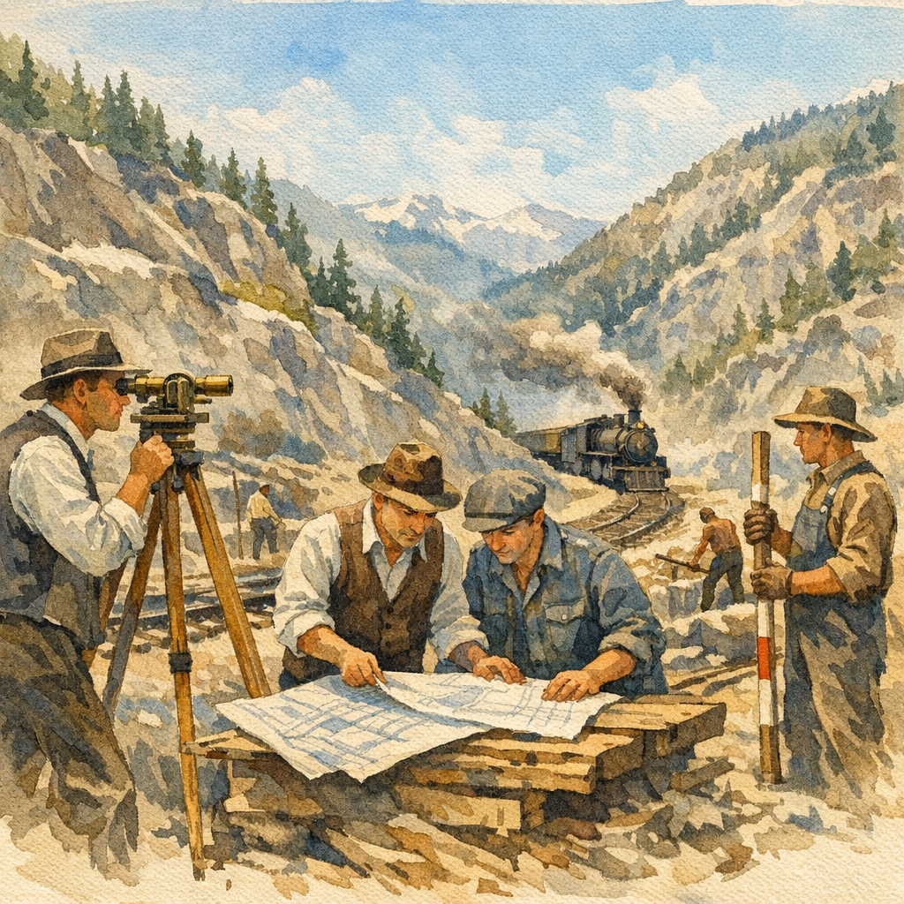

Relationship: Great-grandfather (Higgins line)
Orphan, Railroad Engineer, WWI Veteran
James Everett Higgins was born on February 2, 1892, in Manhattan, New York, the fourth of five children born to Laurence Higgins (1854–1930) and Mary Knight (1866–1930). His parents were Irish immigrants who lived in the Newark and Jersey City area, where Laurence worked as a porter. James's early years were shaped by the tight-knit but struggling Irish-American community of urban New Jersey.
By 1905, when James was thirteen, he and his younger sister Theresa were living at St. Agatha's Home for Children in Nanuet, New York—a Catholic orphanage in Rockland County. The circumstances that led to this placement remain unclear; both parents were still alive, suggesting the family faced a crisis severe enough that they could not care for their children. Whatever hardship drove him there, James would emerge from these difficult years with a determination to make his own way.
By 1910, at just eighteen, James had made his way across the country and was boarding in San Francisco. Over the following decade, he built a career as a civil engineer with the Western Pacific Railroad, working the line through Feather River Canyon—the last major railroad route carved through the Sierra Nevada, an engineering marvel of tunnels and trestles hugging granite cliffs above the river. A 1921 newspaper noted that "James E. Higgins is an earnest, hard-working young civil engineer, whose friends believe he will go far."
When the United States entered World War I, James enlisted in July 1918, listing his residence as the Langhan Hotel in Spokane, Washington. He served as a wagoner—driving supply wagons and handling horses—and remained stateside until his discharge on June 9, 1919.
In 1924, James's sister Theresa placed a newspaper advertisement searching for him: "James Higgins, 32, Formerly of N.Y., Sought by Sister." The siblings had lost touch during the war years and his constant movement working the western railroads.
James married Doris Pauline Kuthe on November 6, 1926, in Phoenix, Arizona. Doris was the daughter of George Washington Kuthe, an Oregon farmer who had relocated to Arizona, and granddaughter of Oregon Trail pioneers. The marriage connected the Higgins line—rooted in Dublin and Newark—to the Kuthe family's westward journey from Missouri to Oregon to Arizona.
Their son Howard Robert Higgins was born on September 15, 1927, in Tucson. But the marriage was short-lived. Doris, an ambitious young teacher building a career in Arizona's early education system, filed for divorce in December 1928. The divorce was finalized by 1930, with Doris living in Buckeye and working as a teacher. She remained close with the Birch family, friends who would later play an important role in young Howard's life.
James returned to California, continuing his railroad work and trying to make ends meet through the lean years of the Depression. By 1932, legal judgments had been filed against him—signs of the financial troubles that plagued many during that era. He lived at various San Francisco addresses, including 516 O'Farrell Street. In his final years, James found work with the WPA on one of the era's most ambitious engineering projects: the construction of Treasure Island in San Francisco Bay, a man-made island built for the 1939 Golden Gate International Exposition.
On July 6, 1938, James Everett Higgins died in San Francisco at age forty-six. He was found in a "lodger's cell" at the city jail—not incarcerated, but using the free overnight shelter the jail provided for men who had nowhere else to go. Newspapers reported he had recently paid off his debts before taking his own life. As a veteran, he was buried two days later with military honors.
James Higgins's life traced an arc familiar to many of his generation: from immigrant roots and childhood hardship, through self-made success in the booming industries of the American West, to the crushing weight of the Great Depression. Though he did not live to see his son grow up, Howard would carry forward the connection to Arizona that James's brief marriage to Doris had established—though raised by the Birch family, with the Higgins name a quiet part of his heritage discovered only by later generations. Howard married Patricia Anne Mowrey, a descendant of the Gleeson and Mowery lines, weaving together family threads that continue today.
James's legacy as an engineer echoed through the generations. Howard became an electrical engineer; his son Mike combined talents in music and computing; and later descendants would carry the technical tradition forward into software engineering—a through-line from the railroad surveys of the 1910s to the digital age.
Notes: